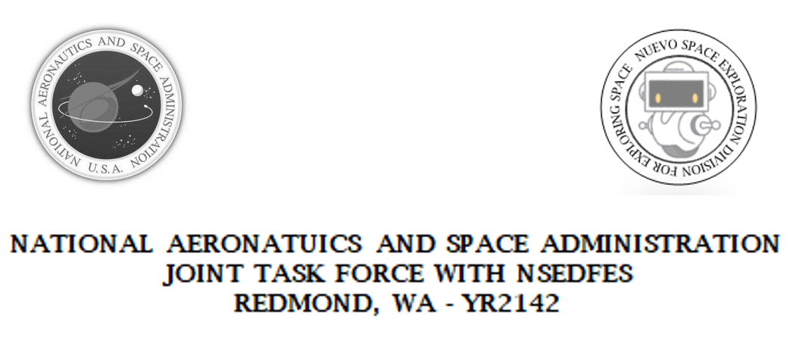

NFISCOOL-FMC
MEMORANDUM FOR DISTRIBUTION
CREWMEMBER INTRODUCTION
SUBJECT: Introduction to space exploration mission codename ‘SEE YA EARTH, intended for new crew members before launch.
INTRODUCTION: Welcome [CREWMEMBER] to the crew for mission SEE YA EARTH, the most ambitious manned space expedition ever planned for human history. You are joining a team of highly trained astronauts, scientists, engineers, and ventriloquists on a mission to boldly go where no human has gone before.
DESTINATION: Your destination is Kepler 186f. Recent advances in telescope technology has enabled us to confirm the existence of water and an Earth-like climate. Coupled with advances in faster-than-light (FTL) travel and cryo-sleep, we are finally able to send a manned expedition to establish a crewed research base for further development.
VEHICLE: Your ship, the VCS Nuevo, is a class-3 starship equipped with state-of-the-art technology, including our newest version of a faster-than-light (FTL) engine, capable of reaching Kepler 186f in approximately 34 years. Crew members will spend most of this time in cryo-sleep, waking on staggered shifts for maintenance. The ship is fully automated, with advanced self-diagnostic systems in case of emergency.
You represent the best and brightest of humanity – good luck and godspeed on your mission.
Sincerely,
I. Nuvi,
Director of Cool Space Explorations
NSEDFES